Modulo PrestaShop · versione 1.6.0
Amazon Marketplace Pro
Guida utente: cosa fa il modulo, come funziona ogni schermata e come farlo lavorare in automatico.
Amazon Marketplace Pro collega un negozio PrestaShop ad Amazon tramite la Selling Partner API ufficiale di Amazon, così puoi gestire la tua attività su Amazon dal back office che usi già. Copre l'intero ciclo di vendita:
Il modulo funziona interamente all'interno della tua installazione PrestaShop e chiama Amazon direttamente dal tuo server. I dati di prodotti, ordini e acquirenti sono memorizzati solo nel tuo database.
IntelliPresta gestisce un piccolo servizio su intellipresta.com. Fa due cose e nient'altro:
| PrestaShop | Dalla 1.6 alla 9. L'interfaccia si adatta ai design del back office 1.6, 1.7–9 e «Basic Edition». La modalità multinegozio è supportata: ogni negozio collega il proprio account Amazon (sezione 11.5). |
| Account Amazon | Un piano di vendita Professionale, attivo, su uno qualsiasi dei 23 marketplace supportati (Europa, Nord America, Brasile, Medio Oriente, Africa, Giappone, Australia, Singapore, India). |
| Hosting | PHP con cURL. È consigliato un crontab; se il tuo hosting non lo offre, ci pensa lo scheduler IntelliPresta. La funzione facoltativa di lettura delle risposte degli acquirenti richiede l'estensione PHP IMAP. |
| Catalogo | Ogni prodotto e ogni combinazione devono avere un riferimento (SKU) e un codice a barre (EAN o UPC). Lo strumento Controllo del catalogo (sezione 11.3) trova quelli a cui mancano. |
Dopodiché, l'ordine di lavoro abituale è: controlla i riferimenti del catalogo (11.3), crea un profilo di inserzione per ogni famiglia di prodotti (5.4), esegui la sincronizzazione in due passaggi in Catalogo > Prodotti (5.1) e lascia che le attività pianificate mantengano tutto aggiornato.
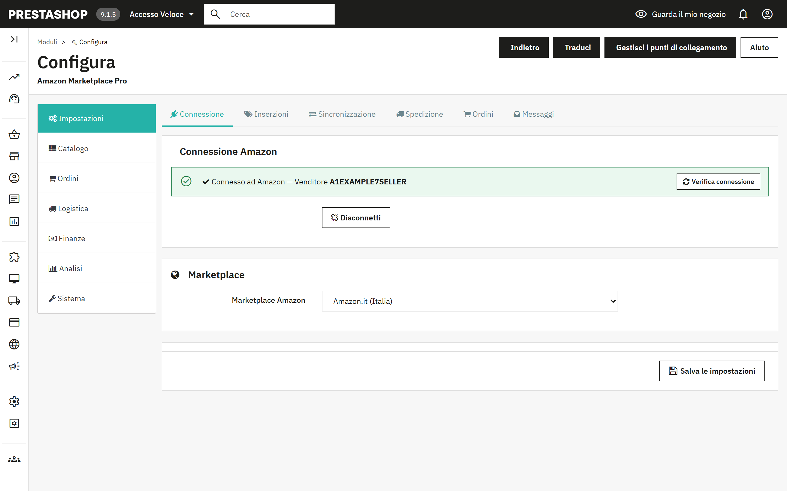
La pagina Configura ha una barra laterale con sette gruppi. Ogni gruppo ha delle sotto-schede in alto e ogni sotto-scheda contiene uno o più pannelli. Il modulo ricorda in quale gruppo ti trovavi quando ricarichi la pagina o salvi.
| Gruppo | Sotto-schede | A cosa serve |
|---|---|---|
| Impostazioni | Connessione, Inserzioni, Sincronizzazione, Spedizione, Ordini, Messaggi | Tutto ciò che configuri una volta sola. Un unico pulsante Salva le impostazioni salva insieme tutte e sei le sotto-schede. |
| Catalogo | Prodotti, Profili, Ricarichi e regole, Regole per prodotto, Coda, Orfane | Portare i prodotti su Amazon e mantenere allineati i due cataloghi. |
| Ordini | Ordini, Ordini in sospeso, Resi | Importare gli ordini Amazon, gestire le carenze di giacenza, i resi e i messaggi degli acquirenti. |
| Logistica | FBA, Multi-account | Giacenza gestita da Amazon, logistica multicanale, marketplace aggiuntivi. |
| Finanze | Repricing, Commissioni, Promozioni | Prezzi competitivi, commissioni Amazon, promozioni. |
| Analisi | Report | Richiedere e scaricare i report Amazon. |
| Sistema | Automazione, Strumenti, Log | La pianificazione, gli strumenti per il catalogo, le eliminazioni, i contenuti dei feed, il registro delle attività. |
Il gruppo Impostazioni è un unico modulo da compilare. Modifica ciò che vuoi in una qualsiasi delle sei sotto-schede, poi premi Salva le impostazioni in fondo.
Mostra se il negozio è connesso e a quale venditore. Connetti ad Amazon avvia la procedura di approvazione in Seller Central; Disconnetti elimina l'autorizzazione memorizzata. Seleziona il marketplace prima di connetterti, perché la pagina di consenso dipende da esso.
Il banner verde indica solo che una connessione è salvata. Verifica connessione, all'interno del banner, dimostra che funziona ancora: si collega ad Amazon, legge i tuoi ordini recenti e ti dice in parole semplici che tutto funziona oppure cosa fare. Eseguila dopo la connessione o ogni volta che una sincronizzazione segnala un errore di autorizzazione. La sezione 13 elenca i risultati.
Marketplace Amazon. Il sito Amazon su cui vende questo negozio. I marketplace aggiuntivi si aggiungono in Logistica > Multi-account (sezione 8).
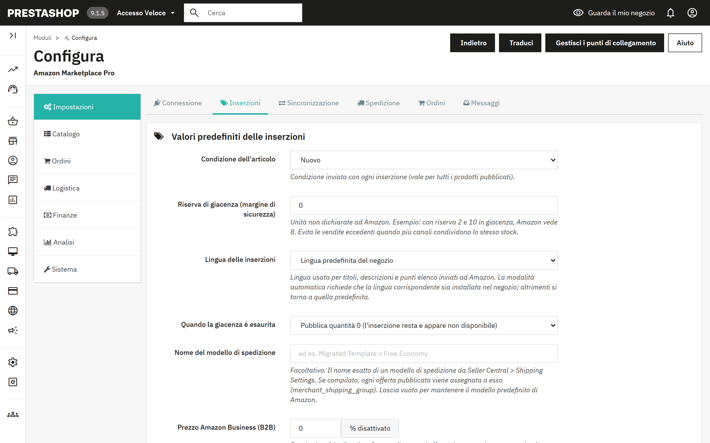
| Condizione dell'articolo | Condizione inviata con ogni inserzione: Nuovo, i quattro gradi Usato oppure Ricondizionato. Un prodotto può sostituirla nella sua scheda Amazon (sezione 6). |
| Riserva di giacenza | Unità non dichiarate ad Amazon. Con riserva 2 e 10 in giacenza, Amazon vede 8. Evita le vendite eccedenti quando più canali condividono la stessa giacenza. |
| Lingua delle inserzioni | Lingua di titoli, descrizioni e punti elenco. «Auto» segue il marketplace (la Germania riceve il tedesco, la Francia il francese) e richiede che quella lingua sia installata nel negozio; altrimenti si usa la lingua predefinita del negozio. |
| Quando la giacenza è esaurita | Pubblica quantità 0 (l'inserzione resta e appare non disponibile) oppure elimina l'inserzione da Amazon. |
| Nome del modello di spedizione | Facoltativo. Il nome esatto di un modello di spedizione di Seller Central; ogni offerta viene assegnata a esso. Le fasce per prezzo o peso si impostano in Spedizione (4.4). |
| Prezzo Amazon Business (B2B) | Percentuale facoltativa di sconto sul tuo prezzo normale, inviata come prezzo business per gli acquirenti Amazon Business. 0 la disattiva. |
| Sconti quantità B2B dal gruppo | Un gruppo di clienti PrestaShop i cui prezzi specifici con quantità minima superiore a 1 diventano fasce di volume di Amazon Business, fino a cinque. |
| Origine dello SKU | Quale campo PrestaShop diventa lo SKU Amazon: riferimento, codice EAN o riferimento fornitore. I prodotti con il campo di origine vuoto non vengono esportati. |
| Prefisso dello SKU | Viene aggiunto davanti allo SKU con un trattino: il prefisso AMZ produce AMZ-REF123. |
| Fascia di prezzo, Quantità min. | Esporta solo i prodotti il cui prezzo finale rientra nella fascia e la cui giacenza è almeno pari al minimo. 0 disattiva un limite. |
| Usa i prezzi specifici | Applica i prezzi specifici di PrestaShop, facoltativamente quelli di un solo gruppo di clienti, prima del ricarico. |
| E-mail per i report | Le esecuzioni pianificate inviano qui un breve report. Se il campo è vuoto, non viene inviato alcun report. |
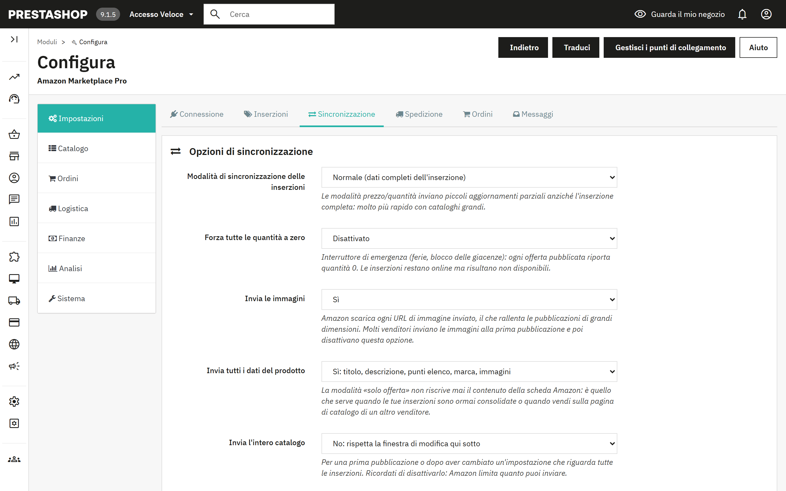
| Modalità di sincronizzazione delle inserzioni | Normale invia i dati completi dell'inserzione. «Solo prezzo» e «Solo quantità» inviano piccoli aggiornamenti parziali, molto più rapidi con i cataloghi grandi. |
| Forza tutte le quantità a zero | Interruttore di emergenza per ferie o blocco delle giacenze. Le inserzioni restano online e risultano non disponibili. |
| Invia le immagini | Amazon scarica ogni URL di immagine che invii, e questo rallenta gli invii di grandi dimensioni. Molti venditori inviano le immagini alla prima pubblicazione e poi disattivano questa opzione. |
| Invia tutti i dati del prodotto | Sì invia titolo, descrizione, punti elenco, marca e immagini. No invia solo l'offerta (prezzo e giacenza), che non riscrive mai il contenuto dell'inserzione. Scegli No quando le inserzioni sono ormai consolidate o quando vendi sulla pagina di catalogo di un altro venditore. |
| Invia l'intero catalogo | Ignora la finestra di modifica, per una prima pubblicazione o dopo aver cambiato un'impostazione che riguarda tutte le inserzioni. Disattivalo di nuovo subito dopo. |
| Esporta solo i prodotti con ASIN | Limita gli invii ai prodotti già abbinati a una pagina Amazon. |
| Limita l'esportazione a N righe | Fissa per ogni lotto di invio un tetto compreso tra 100 e 1500 righe. |
| Tratta il campo EAN-13 di PrestaShop come | Scegli UPC se nel campo EAN memorizzi codici a barre statunitensi a 12 cifre. |
| Esporta solo i prodotti modificati nelle ultime | La finestra di modifica: da 1 a 24 ore. Fortemente consigliata per i cataloghi grandi. I prodotti toccati da modifiche delle regole vengono inclusi tramite la Coda (5.6). |
| Elimina le voci della coda dopo | Periodo di conservazione delle voci della coda già inviate: 1, 7 o 15 giorni. |
| Arrotondamento dei prezzi | Al centesimo più vicino, «intelligente» per eccesso a ,99, oppure numeri interi. Viene applicato dopo i ricarichi a ogni prezzo esportato. |
| Invia i prezzi promozionali | Un prezzo specifico con data di inizio e di fine diventa una promozione Amazon con la stessa finestra, così le promozioni possono essere inviate in anticipo. |
| Invia il prezzo di listino | Invia il prezzo prima dello sconto come prezzo di listino barrato, quando è superiore al prezzo esportato. |
| Preordine | I prodotti con una data di disponibilità futura vengono pubblicati con quella data di rifornimento. |
| Corrispondenza delle condizioni | Associa le tre condizioni di PrestaShop all'elenco più ricco di Amazon. |
| Formato del titolo delle inserzioni | Nome del prodotto così com'è, oppure «Marca - Nome del prodotto - Attributi» secondo le linee guida di Amazon. La marca viene omessa quando il nome inizia già con essa. |
| Note sulla condizione | Testo libero inviato con le condizioni Usato e Ricondizionato. |
Tre interruttori fanno reagire il modulo agli eventi di PrestaShop invece di attendere la successiva esecuzione pianificata: invio di prezzo e giacenza al salvataggio di un prodotto, conferma della spedizione con il tracking quando un ordine passa a Spedito, e annullamento su Amazon quando un ordine Amazon viene annullato in PrestaShop.
Modelli di spedizione per fascia di prezzo o peso. Assegna modelli di spedizione Seller Central diversi in base al prezzo o al peso del prodotto. Aggiungi fasce con un minimo (incluso), un massimo (escluso, 0 per illimitato) e il nome del modello. Se l'opzione è disattivata, o se nessuna fascia corrisponde, si usa il modello unico dei Valori predefiniti delle inserzioni.
Corrispondenza dei corrieri. Quale codice corriere Amazon comunicare, per ciascun corriere PrestaShop, quando si confermano le spedizioni. I corrieri senza corrispondenza vengono riconosciuti dal nome.
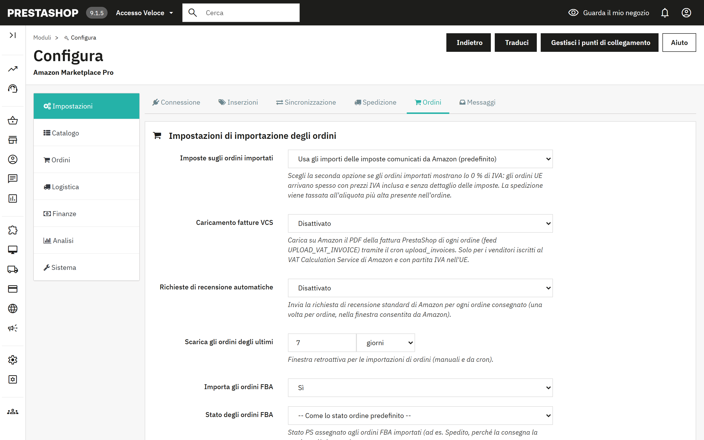
| Imposte sugli ordini importati | Usa gli importi delle imposte comunicati da Amazon, oppure applica le tue regole fiscali PrestaShop considerando i prezzi Amazon IVA inclusa. Scegli la seconda opzione se gli ordini UE importati mostrano lo 0% di IVA. |
| Caricamento fatture VCS | Carica su Amazon il PDF della fattura PrestaShop di ogni ordine. Solo per i venditori iscritti al VAT Calculation Service di Amazon. Viene eseguito tramite l'attività Carica le fatture. |
| Richieste di recensione automatiche | Invia la richiesta di recensione standard di Amazon una volta per ogni ordine consegnato, entro la finestra consentita da Amazon, tramite l'attività Richiedi le recensioni. |
| Scarica gli ordini degli ultimi | Finestra retroattiva per le importazioni manuali e pianificate, in giorni o in ore. |
| Importa gli ordini FBA, Stato degli ordini FBA, Stato degli ordini spediti | Se importare gli ordini gestiti da Amazon e quale stato PrestaShop ricevono questi ordini e quelli già spediti. |
| Abbina le righe d'ordine tramite | Riferimento o SKU personalizzato del prodotto (consigliato), oppure ID PrestaShop se i tuoi SKU Amazon sono stati costruiti dagli ID di prodotto e combinazione. |
| Dai priorità all'ASIN nell'abbinamento dei prodotti | Abbina tramite ASIN prima che tramite SKU, usando la corrispondenza creata dalle sincronizzazioni e da Abbina gli ASIN tramite EAN. |
| Usa un'e-mail anonimizzata per i clienti | Gli indirizzi relay di Amazon scadono; un indirizzo sintetico evita che le e-mail del negozio tornino indietro. La messaggistica con l'acquirente tramite Amazon continua a funzionare. |
| Cancellazione dei dati dell'acquirente, Elimina i dati dell'acquirente dopo | Vedi la sezione 12. |
| Gruppo di clienti per gli acquirenti Amazon | Il gruppo assegnato ai clienti creati dalle importazioni. |
| Carrello remoto, Rilascia una riserva dopo | Riserva la giacenza per gli acquisti Amazon non ancora pagabili e la restituisce dopo il periodo di tolleranza se l'ordine non diventa mai pagabile. Vedi 7.3. |
| Ordini senza giacenza sufficiente | Crea comunque l'ordine PrestaShop, oppure mettilo in Ordini in sospeso per la revisione. |
| Corriere predefinito, Stato ordine predefinito | Usati per gli ordini importati quando non si applica nulla di più specifico. |
Amazon indica la velocità di consegna promessa all'acquirente; associa ciascuna velocità a un corriere PrestaShop. Le Regole di stato avanzate assegnano a determinati ordini un proprio stato, per esempio gli ordini Prime in uno stato che il magazzino non può non vedere, o gli ordini FBA direttamente in Spedito. Le regole vengono valutate dall'alto verso il basso e vince la prima corrispondenza. Fattura via e-mail invia il PDF della fattura PrestaShop, più un allegato facoltativo come le tue condizioni di vendita, quando un ordine raggiunge uno stato scelto.
Amazon non offre alcuna API per leggere ciò che risponde un acquirente; le risposte arrivano via e-mail al tuo indirizzo venditore. Indica quella casella al modulo (host IMAP, porta, utente, password, cartella, SSL) e archivierà ogni messaggio che cita un ordine Amazon nel Servizio clienti di PrestaShop, in corrispondenza dell'ordine giusto. Usa una casella dedicata o una password per app con accesso in sola lettura. Recupera ora le risposte degli acquirenti legge i messaggi non letti; l'attività Recupera i messaggi degli acquirenti lo fa a intervalli regolari.
La sotto-scheda Prodotti è il punto in cui i prodotti passano da un catalogo all'altro. Entrambe le direzioni funzionano allo stesso modo: prima una sincronizzazione legge e confronta, mostrando una tabella con una riga per SKU; poi un secondo passaggio scrive. Nulla viene modificato fino al secondo passaggio.
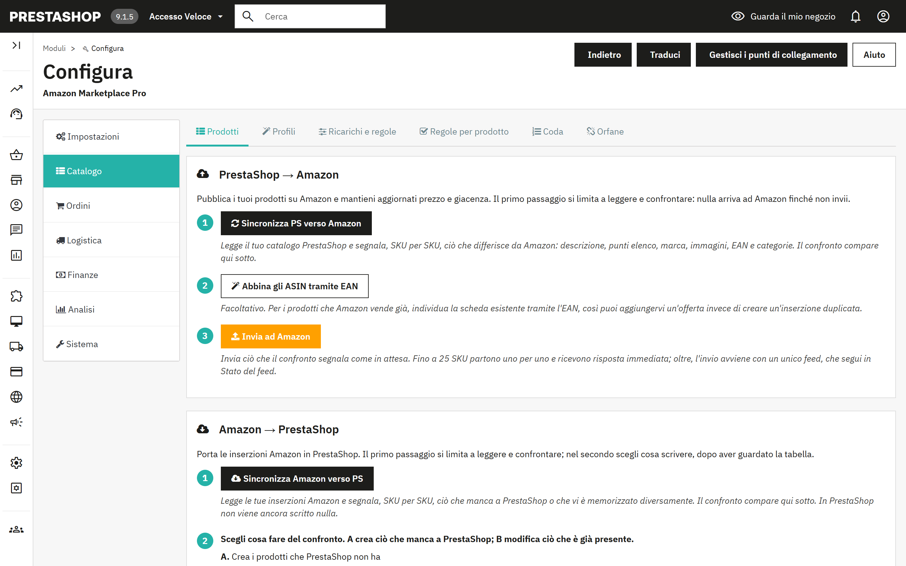
Stato del feed. Un invio di più di 25 SKU parte come un unico feed. Verifica lo stato del feed chiede ad Amazon se è terminato e mostra, per ogni feed, il numero di elementi accettati, di errori e di avvisi. Il JSON esatto di ogni feed viene conservato e si può scaricare in Sistema > Strumenti.
Corrispondenza delle categorie. Il modo più vecchio e più semplice per indicare ad Amazon di che tipo è un prodotto: un tipo di prodotto Amazon e un browse node facoltativo per ogni categoria PrestaShop, più eventuali attributi aggiuntivi in JSON. I prodotti di una categoria associata inviano i dati completi dell'inserzione; quelli di una categoria non associata inviano solo l'offerta. I Profili di inserzione (5.4) svolgono lo stesso compito con i campi di attributo definiti da Amazon e hanno la precedenza; la corrispondenza delle categorie resta come alternativa per le categorie senza profilo.
Elenco dei prodotti Amazon. Una vista in sola lettura di ciò che Amazon restituisce per il tuo account.
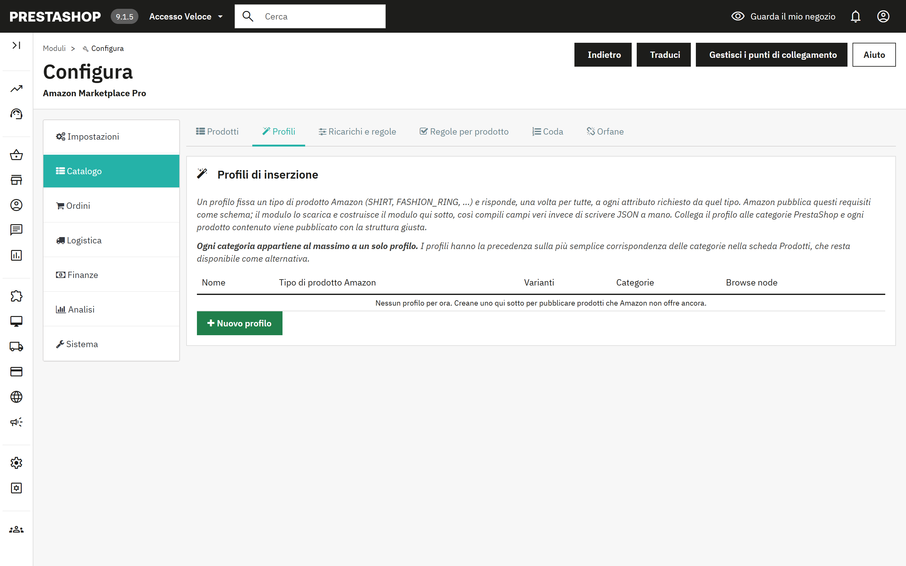
Un profilo fissa un tipo di prodotto Amazon (SHIRT, FASHION_RING e così via) e risponde, una volta per tutte, a ogni attributo richiesto da quel tipo. Amazon pubblica questi requisiti come schema; il modulo lo scarica e ne ricava dei campi da compilare, così inserisci valori veri invece di scrivere JSON. Collega il profilo alle categorie PrestaShop e ogni prodotto al loro interno viene pubblicato con la struttura giusta. Ogni categoria appartiene al massimo a un solo profilo.
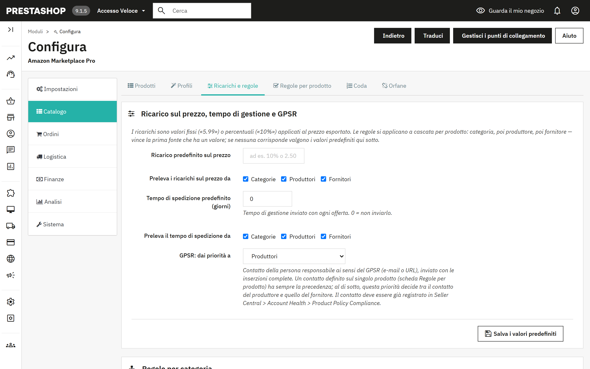
I ricarichi sono valori fissi («5.99») o percentuali («10%») applicati al prezzo esportato. Le regole si applicano a cascata per prodotto: categoria, poi produttore, poi fornitore; vince la prima fonte che ha un valore, e se nessuna corrisponde valgono i valori predefiniti. La stessa cascata stabilisce il tempo di gestione e il contatto GPSR.
Le tabelle Regole per categoria, Regole per produttore e Regole per fornitore contengono, per ciascuna voce, il ricarico sul prezzo, il tempo di spedizione, l'e-mail o il link GPSR e un interruttore Sì/No di sincronizzazione. La tabella dei produttori contiene anche il paese di origine. Il salvataggio mette in coda i prodotti interessati, così la prossima sincronizzazione differenziale li reinvia.
Regole per prodotto permette di escludere singoli prodotti dalla sincronizzazione con Amazon o di assegnare a un prodotto un proprio contatto GPSR, che prevale sui contatti di produttore e fornitore. Le stesse opzioni, e altre ancora, sono disponibili nella scheda Amazon di ciascun prodotto (sezione 6).
Coda elenca i prodotti modificati in PrestaShop o toccati da modifiche delle regole. Con la finestra di modifica attiva, le voci attive vengono incluse nella sincronizzazione successiva anche se il prodotto stesso non è stato modificato di recente. Le voci inviate diventano inattive e vengono eliminate dopo il periodo di conservazione configurato. Il pannello offre Attiva tutto, Disattiva tutto, Elimina le voci scadute e Rimuovi tutto.
Orfane elenca le inserzioni Amazon che non corrispondono più a un prodotto PrestaShop vendibile, perché il prodotto è stato eliminato, disattivato oppure il suo SKU è cambiato. Esegui prima Sincronizza Amazon verso PS affinché l'elenco rispecchi il tuo inventario reale, poi correggi i prodotti o elimina le inserzioni con lo strumento descritto in 11.3.
Ogni pagina prodotto di PrestaShop riceve una scheda Amazon Marketplace Pro. Le sue impostazioni valgono solo per quel prodotto e prevalgono sul profilo di inserzione, sulle regole di categoria, produttore e fornitore e sulle impostazioni globali. Lascia vuoto un campo per ereditare il valore.
| Sincronizza questo prodotto con Amazon | Sì, oppure escludilo da ogni esportazione. |
| Invia prezzo / invia quantità | Deseleziona una delle due caselle per lasciare quel valore invariato su Amazon, per esempio quando aggiorni i prezzi direttamente su Amazon. |
| Forzatura della giacenza | Invia la quantità reale, sempre disponibile (999) oppure sempre esaurito (0). |
| Prezzo sostitutivo | Inviato al posto del prezzo del negozio; ricarichi e regole di prezzo vengono ignorati. |
| SKU personalizzato | Per un prodotto che esiste già nel tuo inventario Amazon con un altro SKU venditore. Serve sia per aggiornare l'inserzione sia per abbinare gli ordini. |
| ASIN | Collega l'offerta a una pagina Amazon nota, invece di lasciare che Amazon la abbini tramite il codice a barre. |
| Gestito da Logistica di Amazon | Se lo spedisci tu (MFN) o lo spedisce Amazon (AFN). |
| Tempo di gestione, Modello di spedizione, Browse node, Marca sostitutiva | Versioni per singolo prodotto dei valori del profilo e di quelli globali. |
| Condizione, Nota sulla condizione | Sostituiscono il valore predefinito globale, con l'elenco completo delle condizioni di Amazon. |
| Caratteristiche principali del prodotto | Un punto elenco per riga, fino a cinque da 500 caratteri ciascuno. Se il campo è vuoto, vengono generati dalla descrizione breve. |
| Contatto GPSR | E-mail o URL della persona responsabile; prevale sul contatto di produttore e fornitore. |
| Opzioni regalo, Codice Transparency | Offri confezione regalo e messaggio regalo; il codice Transparency del prodotto, se aderisci al programma. |
| Propaga queste impostazioni a | Applica gli stessi valori, al salvataggio, a tutti i prodotti della stessa categoria predefinita, dello stesso produttore, dello stesso fornitore, oppure a tutti i prodotti attivi. I campi identificativi (SKU, ASIN, prezzo, codice Transparency) non vengono mai propagati. |
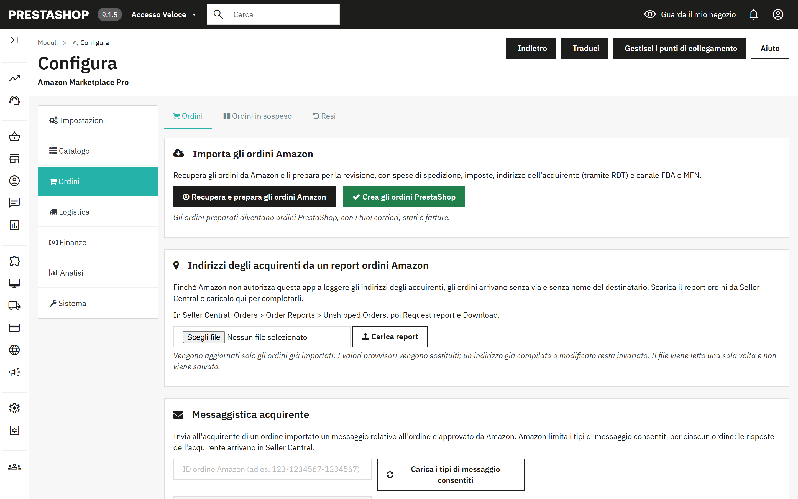
L'importazione avviene in due passaggi, come per il catalogo, così puoi controllare prima che venga creato qualcosa.
Le attività pianificate Importa gli ordini e Crea gli ordini PrestaShop eseguono gli stessi due passaggi in automatico, per impostazione predefinita ogni 15 minuti. Quando un ordine passa a Spedito in PrestaShop, e l'hook descritto in 4.3 è attivo, il modulo conferma la spedizione ad Amazon con il numero di tracking e il codice corriere associato.
La lettura di nome, indirizzo e numero di telefono dell'acquirente direttamente da Amazon arriverà presto. Per ora, per ottenerli scarica il report ordini da Seller Central e caricalo nel modulo. Finché non lo fai, l'ordine mostra il cliente come «Amazon Buyer» e la via come «Amazon Marketplace Order».
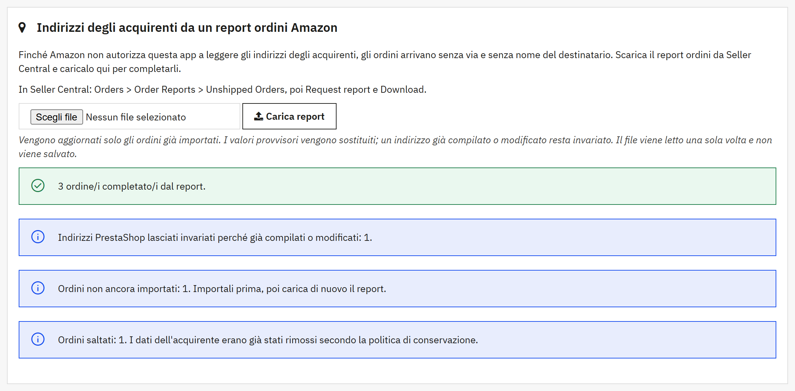
Il risultato indica quanti ordini sono stati completati, quanti avevano già un indirizzo completo, quanti indirizzi PrestaShop sono stati lasciati invariati, quanti ordini non sono ancora importati e quanti sono stati saltati perché i dati dell'acquirente erano già stati cancellati. Il caricamento segue queste regole:
Caricare di nuovo lo stesso report non causa problemi: ogni ordine risulta semplicemente già completo. I dati inseriti da un report vengono cancellati insieme al resto dei dati dell'acquirente dopo il periodo di conservazione (sezione 12).
Ordini in sospeso contiene gli ordini Amazon che non sono potuti diventare ordini PrestaShop perché a un prodotto manca la giacenza. Rifornisci il prodotto e riesegui Crea gli ordini PrestaShop, forza l'ordine con Crea comunque, oppure rimuovilo.
Giacenza riservata (carrello remoto) elenca le unità trattenute per acquisti Amazon non ancora pagabili. Amazon presenta un pagamento in corso come ordine «Pending»; con Carrello remoto attivo (4.5), il modulo toglie subito quelle unità dalla giacenza PrestaShop, così nessun altro canale può venderle, le consegna quando l'ordine diventa pagabile e le restituisce dopo il periodo di tolleranza se ciò non avviene. L'attività Chiudi i carrelli remoti si occupa di chiudere le riserve.
Importa i resi da Amazon recupera resi e annullamenti; Elabora i resi in sospeso crea le note di credito PrestaShop o annulla gli ordini PrestaShop di conseguenza. La tabella Cronologia dei resi mostra ciascuno con tipo, importo del rimborso, ordine PrestaShop e nota di credito. Le attività Importa i resi ed Elabora i resi automatizzano entrambe le operazioni.
Inserisci un ID ordine Amazon e premi Carica i tipi di messaggio consentiti; Amazon limita i tipi di messaggio permessi per ciascun ordine. Scrivi il messaggio e invialo, oppure premi Richiedi una recensione per inviare la richiesta di recensione standard di Amazon, consentita una volta per ordine, da 5 a 30 giorni dopo la consegna. Le risposte arrivano via e-mail e possono essere archiviate nel Servizio clienti con le impostazioni di Messaggi (4.6).
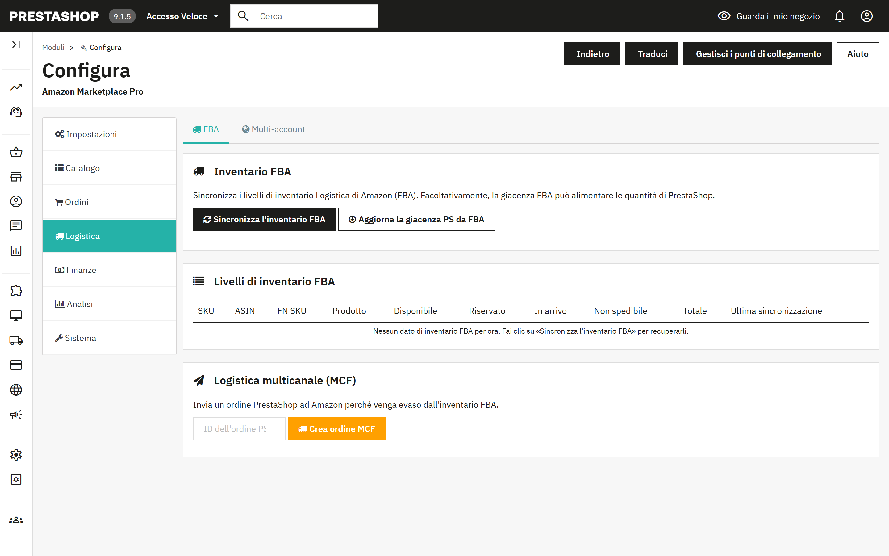
Sincronizza l'inventario FBA scarica la giacenza che Amazon conserva per te, SKU per SKU, nelle colonne Disponibile, Riservato, In arrivo e Non spedibile. Aggiorna la giacenza PS da FBA scrive la quantità disponibile in PrestaShop, per i venditori la cui merce si trova nei magazzini di Amazon. L'attività Sincronizzazione dell'inventario FBA esegue lo scaricamento ogni ora per impostazione predefinita.
Inserisci un ID ordine PrestaShop e premi Crea ordine MCF per far spedire ad Amazon un ordine PrestaShop dal tuo inventario FBA.
Aggiungi altri marketplace Amazon, ciascuno con il proprio ID venditore o con quello principale, e scegli per ogni marketplace se sincronizzare ordini, prodotti e giacenze. Se ne occupano le attività Importa gli ordini, tutti i marketplace e Sincronizzazione dei prodotti, tutti i marketplace. Il marketplace principale definito in Impostazioni è sempre attivo.
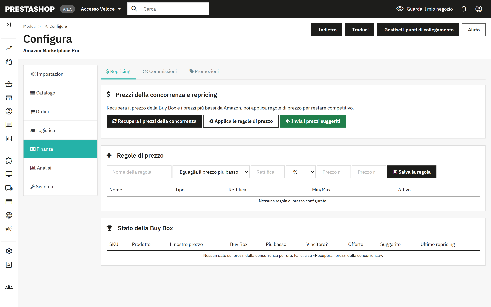
Tre pulsanti, in quest'ordine: Recupera i prezzi della concorrenza scarica il prezzo della Buy Box, il prezzo più basso e il numero di offerte per ciascuna delle tue inserzioni; Applica le regole di prezzo calcola un prezzo suggerito per ogni SKU; Invia i prezzi suggeriti invia quelli che approvi. La tabella Stato della Buy Box mostra il tuo prezzo rispetto al mercato e se detieni la Buy Box.
Una regola di prezzo ha un tipo (eguagliare o battere il prezzo più basso, eguagliare o battere la Buy Box, oppure un margine fisso), una rettifica in percentuale o come importo fisso, e un prezzo minimo e uno massimo come limiti di sicurezza. L'attività Ciclo di repricing esegue recupero e applicazione a intervalli regolari; l'invio resta manuale, a meno che tu non lo attivi lì.
Recupera i costi degli ordini preleva commissioni di segnalazione, costi FBA e provvigioni per ordine dall'API Finances di Amazon, così il margine reale di ogni vendita è visibile. Il riepilogo li raggruppa per tipo di costo. L'attività Recupera i costi viene eseguita ogni sei ore per impostazione predefinita.
Importa le promozioni applicate agli ordini Amazon, esporta le regole del carrello PrestaShop per il monitoraggio, oppure crea regole del carrello PrestaShop dalle promozioni Amazon. La tabella della cronologia mostra ogni promozione con la sua direzione.
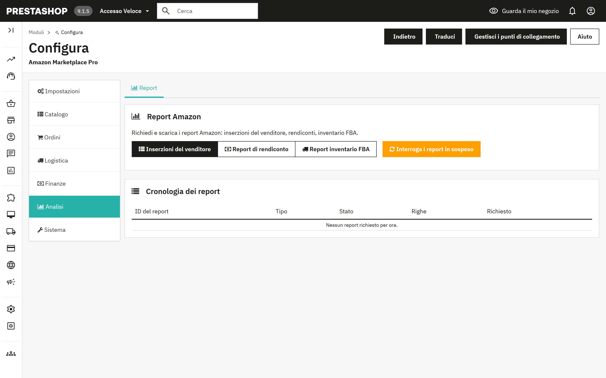
Richiedi ad Amazon uno di questi report: Inserzioni del venditore, Report di rendiconto o Report inventario FBA. Amazon prepara i report in background; Interroga i report in sospeso controlla quelli terminati e li scarica, e la tabella della cronologia mostra stato e numero di righe. L'attività Interroga i report esegue il controllo ogni 30 minuti per impostazione predefinita.
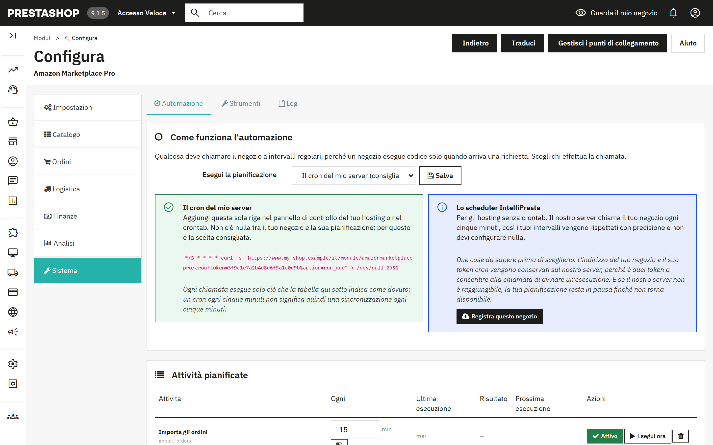
Un negozio esegue codice solo quando arriva una richiesta, quindi qualcosa deve chiamarlo a intervalli regolari. Scegli chi effettua la chiamata:
| Modalità | Come funziona | Quando sceglierla |
|---|---|---|
| Il cron del mio server (predefinita, consigliata) | Aggiungi l'unica riga mostrata nel pannello di controllo del tuo hosting o nel crontab. La riga chiama il tuo negozio ogni cinque minuti; ogni chiamata esegue solo le attività in scadenza. Non c'è nulla tra il tuo negozio e la sua pianificazione. | Il tuo hosting offre un crontab o una funzione di attività pianificate, come la maggior parte degli hosting. |
| Lo scheduler IntelliPresta | Selezionalo, salva, poi premi Registra questo negozio. Il server IntelliPresta chiama il tuo negozio ogni cinque minuti, così gli intervalli vengono rispettati con precisione senza nulla da configurare. L'indirizzo del negozio e il token cron vengono conservati su quel server; se il server non è raggiungibile, la tua pianificazione resta in pausa finché non torna disponibile. Smetti di usare lo scheduler rimuove la registrazione. | Il tuo hosting non ha un crontab, o preferisci non gestirne uno. Il negozio deve essere raggiungibile in HTTPS. |
La riga cron ha questa forma; il modulo mostra la tua con l'indirizzo e il token corretti:
*/5 * * * * curl -s "https://www.your-shop.example/module/amazonmarketplacepro/cron?token=YOUR-TOKEN&action=run_due" > /dev/null 2>&1
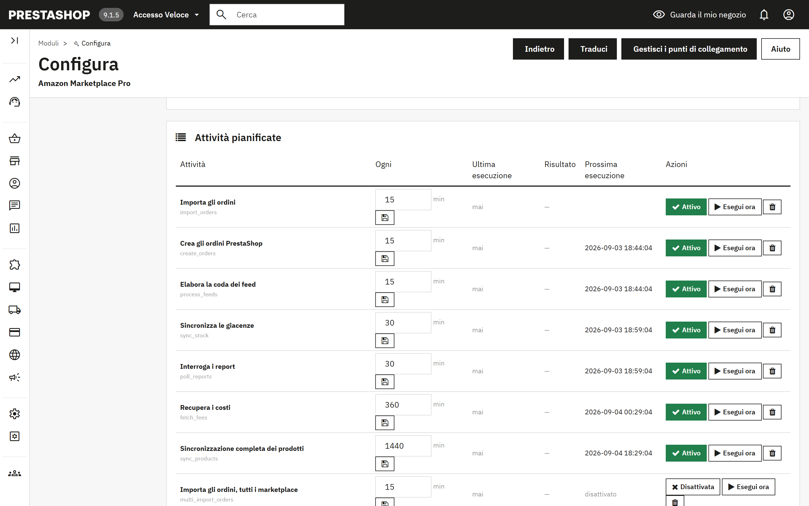
Ogni riga è un'attività, con il suo intervallo in minuti, quando è stata eseguita l'ultima volta e con quale risultato, e quando verrà eseguita la prossima volta. Attivo/Disattivata la attiva o la disattiva, Esegui ora la esegue immediatamente e il cestino la rimuove. Le attività rimosse si possono aggiungere di nuovo con i campi sotto la tabella. Nelle nuove installazioni tutte le attività sono presenti e disattivate, quindi nulla viene eseguito finché non decidi tu.
| Attività | Predefinito | Cosa fa |
|---|---|---|
| Importa gli ordini | 15 min | Recupera e prepara gli ordini Amazon nella finestra retroattiva (7.1, passaggio 1). |
| Crea gli ordini PrestaShop | 15 min | Trasforma gli ordini preparati in ordini PrestaShop (7.1, passaggio 2). |
| Sincronizza le giacenze | 30 min | Invia le quantità attuali, e i prezzi se la modalità di sincronizzazione li include, per i prodotti nella finestra di modifica. |
| Sincronizzazione completa dei prodotti | ogni giorno | Legge il catalogo PrestaShop, lo confronta con Amazon e invia le inserzioni in attesa (5.1, passaggi 1 e 3). |
| Elabora la coda dei feed | 15 min | Invia come feed le modifiche alle inserzioni in coda e registra i risultati di Amazon. |
| Importa i resi / Elabora i resi | 60 min | Recuperano resi e annullamenti, poi creano note di credito o annullano ordini (7.4). |
| Sincronizzazione dell'inventario FBA | 60 min | Scarica i livelli di giacenza conservati da Amazon (sezione 8). |
| Ciclo di repricing | 60 min | Recupera i prezzi della concorrenza e applica le tue regole (sezione 9). |
| Recupera i costi | 6 h | Registra le commissioni Amazon per ordine. |
| Interroga i report | 30 min | Scarica i report terminati (sezione 10). |
| Sincronizza le promozioni | 6 h | Importa le promozioni dagli ordini. |
| Importa gli ordini / Sincronizzazione dei prodotti, tutti i marketplace | 15 min / ogni giorno | Le versioni multi-marketplace dell'importazione degli ordini e della sincronizzazione dei prodotti. |
| Richiedi le recensioni | ogni giorno | Invia le richieste di recensione per gli ordini consegnati, se attivate in 4.5. |
| Chiudi i carrelli remoti | 15 min | Consegna o rilascia la giacenza riservata (7.3). |
| Recupera i messaggi degli acquirenti | 60 min | Legge le risposte degli acquirenti dalla casella e le archivia nel Servizio clienti (4.6). |
| Carica le fatture | 6 h | Carica le fatture IVA per i venditori iscritti al VCS. |
| Elimina i dati degli acquirenti oltre il periodo di conservazione | ogni giorno | Cancella i dati personali degli acquirenti dagli ordini più vecchi del periodo di conservazione (sezione 12). |
Controllo del catalogo. Amazon effettua tutti gli abbinamenti tramite riferimento e codice a barre. I prodotti a cui manca uno dei due, o che condividono il riferimento con un altro prodotto, non possono essere pubblicati né associati agli ordini in arrivo. Controlla il mio catalogo li elenca.
Editor di riferimenti e codici a barre. Esporta tutti i prodotti e le combinazioni in CSV, correggi riferimenti e codici a barre in un foglio di calcolo e ricarica il file. Vengono scritti solo riferimento, EAN, UPC e riferimento fornitore. Questa operazione modifica direttamente il tuo catalogo PrestaShop e non può essere annullata: fai prima un backup ed eseguila prima di pubblicare, altrimenti creerai SKU duplicati su Amazon.
Elimina inserzioni da Amazon. Trova le offerte dei prodotti che non vendi più, perché eliminati, disattivati o esclusi da Amazon, e ti permette di esaminare l'elenco prima di eliminare quelle selezionate. L'eliminazione cancella l'offerta e la sua cronologia su Amazon, e non è reversibile. Per sospendere la vendita temporaneamente, pubblica invece la quantità 0 (4.2).
Contenuti dei feed inviati. Il JSON esatto inviato ad Amazon per ogni feed, scaricabile per ID del feed. L'assistenza Amazon lo chiederà quando un'inserzione viene rifiutata per un motivo che il report non spiega.
Le ultime 50 voci del registro delle attività del modulo, con data, livello, origine e messaggio. Gli errori sono evidenziati. È il primo posto da controllare quando un'attività pianificata mostra «Non riuscita».
Quando PrestaShop gestisce più di un negozio, il modulo lavora per ogni negozio separatamente. Scegli il negozio nel selettore dei negozi in alto nel back office, poi apri il modulo; la sua pagina mostra il nome del negozio sotto il titolo.
| Cosa | Con più negozi |
|---|---|
| Connessione Amazon | Ogni negozio collega il proprio account venditore Amazon con Connetti ad Amazon. Un account venditore può essere connesso a un solo negozio per lo stesso marketplace, così due negozi non importano mai gli stessi ordini. |
| Ordini, prodotti, giacenze e prezzi | Ogni negozio importa i propri ordini Amazon e li crea in quel negozio, e invia solo i propri prodotti, le proprie giacenze e i propri prezzi. |
| Automazione | Ogni negozio ha la propria pianificazione, la propria riga cron e il proprio token (11.1). Aggiungi una riga cron per ogni negozio, oppure registra ogni negozio allo scheduler IntelliPresta. |
| Profili, corrispondenze delle categorie, modelli di spedizione, regole di prezzo e regole per prodotto | Condivisi da tutti i negozi. Un negozio può salvare una propria versione, che vale solo per quel negozio. All'interno di un negozio, gli elementi condivisi da tutti i negozi sono contrassegnati con Tutti i negozi. |
| Cancellazione dei dati dell'acquirente | Viene eseguita per ogni negozio, ciascuno con il proprio periodo di conservazione (sezione 12). |
La politica di protezione dei dati di Amazon impone di eliminare i dati dell'acquirente entro 30 giorni dalla consegna. Con Cancellazione dei dati dell'acquirente attiva, come da impostazione predefinita, il modulo cancella dalla propria tabella degli ordini nome, e-mail, via, città, regione, CAP e telefono dell'acquirente, oltre al payload Amazon memorizzato, quando un ordine è concluso e più vecchio del periodo di conservazione impostato. Totali, imposte, commissioni e paese di destinazione restano, quindi i report e i registri IVA non ne risentono. Impostazioni > Ordini mostra quanti ordini sono in attesa di cancellazione e offre il pulsante Cancellali ora; l'attività Elimina i dati degli acquirenti oltre il periodo di conservazione lo fa ogni giorno.
Disattivare la cancellazione significa conservare i dati degli acquirenti Amazon più a lungo di quanto Amazon consenta. Fallo solo in presenza di un obbligo di legge che sei in grado di dimostrare.
Anonimizza anche il cliente e l'indirizzo PrestaShop è disattivata per impostazione predefinita, di proposito. PrestaShop compone le fatture a partire dall'indirizzo memorizzato: anonimizzarlo modifica quindi documenti che la legge può imporre di conservare intatti, e una fattura da conservare è proprio l'eccezione prevista dalla politica di Amazon. Quando l'opzione è attiva, un cliente viene anonimizzato solo se tutti i suoi ordini sono ordini Amazon già cancellati, e città, CAP e paese vengono mantenuti affinché il trattamento IVA resti giustificabile.
Il regolamento UE sulla sicurezza generale dei prodotti (GPSR) impone un contatto della persona responsabile nelle inserzioni. Impostalo per prodotto (sezione 6), per produttore o fornitore (5.5), e scegli quale dei due prevale. Il contatto deve essere già registrato in Seller Central, in Account Health > Product Policy Compliance. Il paese di origine si imposta per produttore.
Gli ordini importati possono usare gli importi delle imposte comunicati da Amazon oppure le tue regole fiscali (4.5). I venditori iscritti al VAT Calculation Service di Amazon possono far caricare automaticamente le proprie fatture PrestaShop.
Il risultato compare sotto il banner verde in Impostazioni > Connessione. Se la verifica non riesce, i dettagli tecnici vengono scritti anche nella scheda Log (11.4); l'assistenza te li chiederà.
| Risultato | Significato e cosa fare |
|---|---|
| «Tutto funziona: il modulo raggiunge il tuo account Amazon.» | La connessione funziona. Se una sincronizzazione continua a non riuscire, il motivo è nella scheda Log. |
| «Amazon ha negato l'accesso al tuo account venditore.» | La connessione in sé è corretta, ma Amazon non fornisce dati per questo venditore. Verifica in Seller Central che l'account sia attivo e abbia il piano di vendita Professionale. Se è così, premi Disconnetti e poi di nuovo Connetti ad Amazon. |
| «Amazon non accetta più questa connessione.» | La connessione è stata rimossa in Seller Central. Premi Disconnetti e poi di nuovo Connetti ad Amazon. |
| «Non è stato possibile raggiungere Amazon o il servizio di connessione IntelliPresta.» | Di solito è un problema di rete passeggero. Riprova tra qualche minuto; se continua a succedere, contatta l'assistenza. |
| «Questo server non riesce ad aprire una connessione sicura con Amazon.» | I certificati di sicurezza del server non sono aggiornati. Chiedi al tuo provider di hosting di aggiornarli. |
| Sintomo | Causa e rimedio |
|---|---|
| «Nessun prodotto con riferimento (SKU) trovato» dopo Sincronizza PS verso Amazon | I prodotti non hanno un riferimento nel campo scelto come origine dello SKU (4.2). Compilalo, oppure usa l'Editor di riferimenti e codici a barre (11.3). |
| Invio accettato, ma su Amazon l'inserzione contiene solo l'offerta | La categoria del prodotto non ha né un profilo né una corrispondenza di categoria, oppure «Invia tutti i dati del prodotto» è impostato su No (4.3). |
| Inserzione rifiutata con un errore di attributo mancante | Amazon decide i campi obbligatori in modo dinamico. Apri il profilo, trova l'attributo nell'elenco degli attributi facoltativi, compilalo, salva e invia di nuovo. Il contenuto del feed (11.3) mostra esattamente cosa è stato inviato. |
| Gli ordini importati mostrano lo 0% di IVA | Scegli «Applica le mie regole fiscali PrestaShop» in 4.5. |
| Un'attività pianificata mostra «Non riuscita» | La colonna del messaggio e la scheda Log indicano il motivo. Dopo aver risolto, premi Esegui ora per riprovare. Dopo errori ripetuti, premi Verifica connessione (4.1). |
| Non viene eseguito nulla anche se le attività sono attive | Nessun cron sta chiamando il negozio. Verifica che la riga cron esista nel pannello del tuo hosting, oppure che il negozio sia registrato allo scheduler IntelliPresta e raggiungibile in HTTPS. |
| E-mail agli acquirenti Amazon tornate indietro | Gli indirizzi relay di Amazon scadono. Attiva l'e-mail anonimizzata (4.5). |
Scrivi a support@intellipresta.com. Indica la versione del modulo, la versione di PrestaShop, le righe pertinenti della scheda Log e, per i problemi con le inserzioni, l'ID del feed o lo SKU. Rispondiamo entro un giorno lavorativo.
| SKU | Il tuo identificativo di un prodotto su Amazon. Il modulo lo costruisce da un campo PrestaShop, di solito il riferimento. |
| ASIN | L'identificativo di Amazon per una pagina di catalogo. Più venditori possono offrire lo stesso ASIN. |
| EAN / UPC / GTIN | Codici a barre dei prodotti. Amazon li usa per abbinare il tuo prodotto a una pagina esistente. |
| Inserzione e offerta | Un'inserzione è la pagina di catalogo con titolo, descrizione e immagini. Un'offerta è il tuo prezzo e la tua giacenza su quella pagina. |
| Tipo di prodotto | Lo schema di categoria di Amazon (SHIRT, FASHION_RING) che decide quali attributi deve avere un'inserzione. |
| Profilo | Le risposte salvate dal modulo per un tipo di prodotto, collegate a categorie PrestaShop. |
| Feed | Un documento cumulativo inviato ad Amazon ed elaborato in background. Si usa per gli invii di più di 25 SKU. |
| MFN / AFN / FBA | Merchant Fulfilled Network: spedisci tu. Amazon Fulfilled Network, detto anche Fulfillment by Amazon (Logistica di Amazon): Amazon spedisce dai propri magazzini. |
| MCF | Multi-Channel Fulfilment (Logistica multicanale): Amazon spedisce dalla tua giacenza FBA un ordine arrivato da un altro canale, per esempio il tuo negozio. |
| Buy Box | L'offerta predefinita mostrata sulla pagina di un prodotto Amazon. Il repricing punta a conquistarla o a mantenerla. |
| RDT | Restricted Data Token: il meccanismo con cui Amazon rilascia al negozio gli indirizzi degli acquirenti, una chiamata alla volta. |
| GPSR | Il regolamento UE sulla sicurezza generale dei prodotti (General Product Safety Regulation), che impone un contatto della persona responsabile nelle inserzioni. |
| VCS | Il VAT Calculation Service di Amazon: i venditori iscritti caricano le proprie fatture IVA. |
| Finestra di modifica | Il periodo entro il quale un prodotto deve essere stato modificato per essere incluso in un invio. |
| Carrello remoto | Un acquisto Amazon in corso, presentato come ordine Pending, di cui il modulo può riservare la giacenza. |
Amazon Marketplace Pro è sviluppato e mantenuto da IntelliPresta e non è sponsorizzato da Amazon o PrestaShop né affiliato a queste società. Amazon è un marchio di Amazon.com, Inc. o delle sue affiliate. PrestaShop è un marchio di PrestaShop SA.